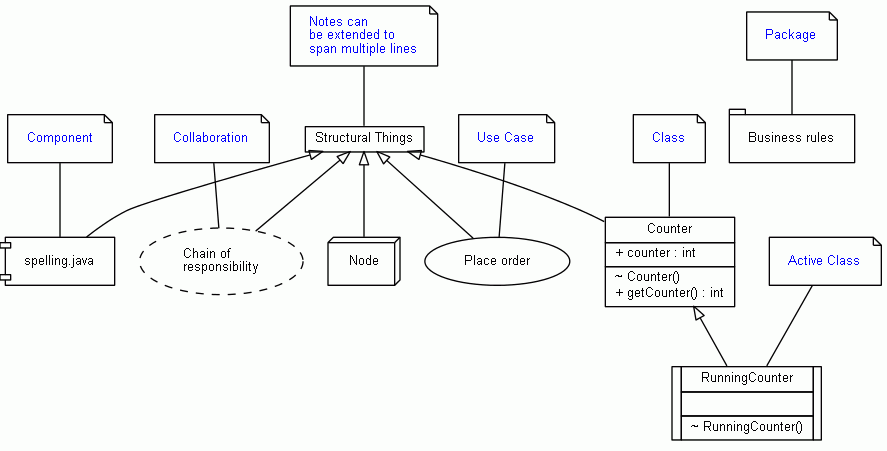

Class Diagram Example: Shapes
/**
* @hidden
* @opt nodefontcolor "blue"
*/
class UMLNoteOptions{}
/**
* Structural Things
* @opt commentname
* @note Notes can
* be extended to
* span multiple lines
*/
class Structural{}
/**
* spelling.java
* @opt shape component
* @opt commentname
* @note Component
*/
class Component extends Structural{}
/** @opt shape node */
class Node extends Structural{}
/**
* Chain of
* responsibility
* @opt shape collaboration
* @opt commentname
* @note Collaboration
*/
class Collaboration extends Structural{}
/**
* Place order
* @opt shape usecase
* @opt commentname
* @note Use Case
*/
class UseCase extends Structural{}
/**
* Business rules
* @opt shape package
* @opt commentname
* @note Package
*/
class Package{}
/**
* @opt all
* @note Class
*/
class Counter extends Structural {
static public int counter;
public int getCounter();
}
/**
* @opt shape activeclass
* @opt all
* @note Active Class
*/
class RunningCounter extends Counter{}

 Last change: Tuesday, October 28, 2014 4:26 pm
Last change: Tuesday, October 28, 2014 4:26 pm